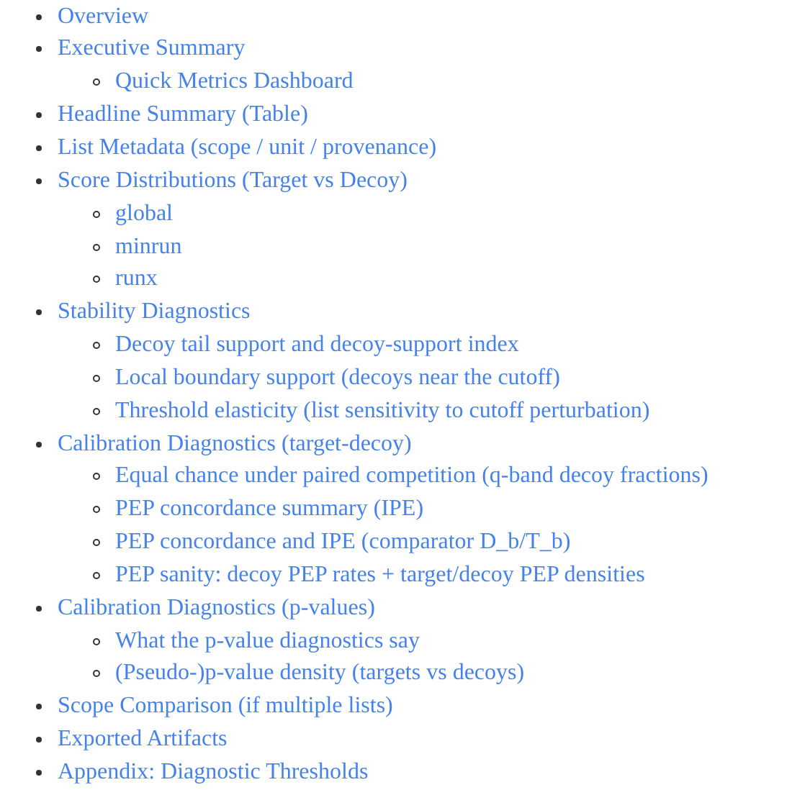
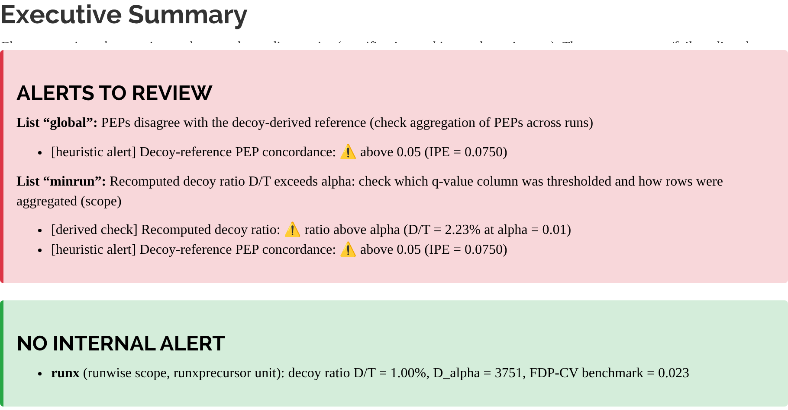
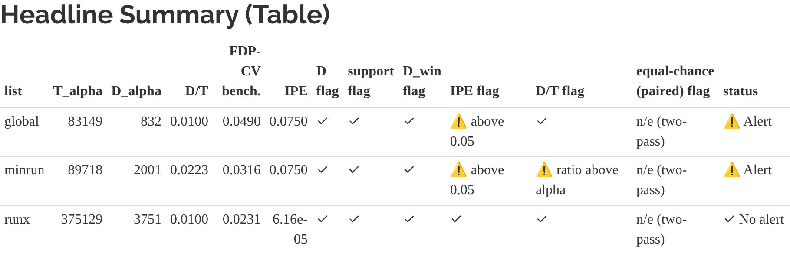

A
Input
Any search engine output
Required: id, is_decoy, score
Used if present: q-value, PEP, p-value, run
External validation: entrapment or ground-truth labels
Provided adapters (Table S1)
read_diann_parquet("report.parquet")
read_spectronaut("report.tsv")
read_dfdr_maxquant_msms("msms.txt")
read_dfdr_mzid("file.mzid")
read_mokapot_psms("t.psms.txt", "d.psms.txt")
Installing and loading diagFDR in R
install.packages("diagFDR"); library(diagFDR)
Import data (tool-agnostic)
Adapters or column mapping: as_dfdr_tbl()
1
Run diagnostics: dfdr_run_all()
Scope (decoy ratio D/T per q-value column) • calibration (IPE, equal chance) • stability (Dα, FDP-CV benchmark, Dα,win, elasticity)
2
Optional: pseudo-p-values from decoys score_to_pvalue()
Output
Reproducible bundle
dfdr_write_report()
• tables (CSV), plots (PNG)
• manifest + README + summary
HTML report
dfdr_render_report()
single entry point for readers and reviewers; alerts, not a verdict
B


